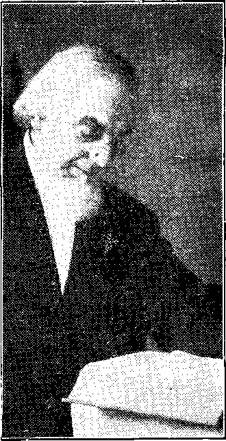
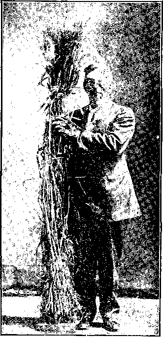

No. 6.
No. 6.
TO US THE SCRIPTURES CLEARLY TEACH
That the Church is “the Temple of the Living God”—peculiarly “His workmanship”; its construction has been in progress throughout the Gospel Age—ever since Christ became the world’s Redeemer and Chief Corner Stone of His Temple, through which, when finished, God’s blessing shall come “to all people,” and they find access to Him.—1 Corinthians 3:16, 17; Ephesians 2:20; Genesis 28:14; Galatians 3:29.
That meantime the chiseling, shaping and polishing of consecrated believers in Christ’s Atonement for sin progresses; and when the last of these “living stones,” “Elect and precious,” shall have been made ready, the great Master Workman will bring all together in the First Resurrection; and the Temple shall be filled with His glory, and be the meeting place between God and men throughout the Millennium.—Revelation 15:5-8; 21:3.
That the Basis of Hope, for the Church rnd the World, lies in the fact that “Jesus Christ, by the grace of God, tasted death for every man,” “ a Ransom for all,” and will be “the true Light which lighteth every man that cometh into the world,” “in due time.”—Hebrews 2:9; John 1:9; 1 Timothy 2:5, 6.
That the Hope of the Church is that she may be like her Lord, “see Him as He is,” be “partaker of the Divine nature,” and share his glory as His joint-heir.—1 John 3:2; John 17:24; Romans 8:17; 2 Peter 1:4.
That the present mission of the Church is the perfecting of the saints for the future work of service; to develop in herself every grace; to be God’s witness to the world; and to prepare to he kings and priests in the next Age.—Ephesians 4:12; Matthew 24:14; Revelation 1:6; 20:6.
That the hope for the World lies in the blessings of knowledge and opportunity to be brought to all by Christ’s Millennial Kingdom—the Restitution of all that was lost in Adam, to all the willing and obedient, at the hands of their Redeemer and His Glorified Church—when all the wilfully wicked will be destroyed.—Acts 3:19-23; Isaiah 35.
We affirm the pre-existence of Jesus as the mighty Word Logos—Spokesman) “the beginning of the creation of God,” "the First-Born of every creature,” the active Agent of the Heavenly Father, Jehovah, in all the work of creation. “Without Him was not anything made that was made.”—Revelation 3:14; Colossians 1 :L5: John 1:3.
We affirm that the Word (Logos) was made flesh—became the Babe of Bethlehem—thus becoming the Man Jesus, “holy, harmless, undefiled, separate from sinners.” As we affirm the humanity of Jesus, we equally affirm the Divinity of Christ—“God also hath highly exalted Him, and given Him a name which is above every name.”—Hebrews 7:26; Philippians 2:9.
We acknowledge that the personality of the Holy Spirit is the Father and thelSon; that the Holy Spirit proceeds from both, and is manifested in all who receive the begetting of the Holy Spirit and thereby become sons of God.—John 1:12; 1 Peter 1:3.
We affirm the resurrection of Christ— that He was put to death in flesh but quickened in Spirit. We deny that He was raised in the flesh, and challenge any statement to that effect as being unscriptural.—1 Peter 3:18; 2 Corinthians 3:17; 1 Corinthians 15:8; Acts 26:13-15.
HOW PASTOR RUSSELL RANKS IN GREATNESS.
Dr. Jackson Analyzes Elements That Constitute True Greatness of a Man.
The world seldom recognizes its great men. Few or none saw the magnificent greatness of Lincoln until after his death. To the prominent and learned of the Roman Empire St. Paul was only an insignificant Jew; but we can see that in all that constitutes real greatness he towered above them all, like a giant among pygmies. So it is today. If you ask the man on the street who are the great men of today, he is not likely to name Charles Taze Russell first. But let us see.
C. T. Russell commenced business for himself while yet a boy and with very little capital. When he was eighteen he owned a store; when he was twenty-four he owned
(.Continued on 2nd page, 1st column.)
WHY THE PREACHERS ATTACK PASTOR RUSSELL
A CANDID STATEMENT OF THE FACTS AT ISSUE
Those who read carefully and get the benefit of the pure spiritual atmosphere into which Pastor Russell leads them need not be told that the many vile printed and pulpit attacks are wholly false and merely the desperate efforts of opponents whose nefarious schemes to keeP the people in ignorance of the truth he is so fearlessly and thoroughly exposing. It is for this reason that the millions of newspaper readers continue to enjoy Pastor Russell’s pen products and are not being influenced by any of the so-called news reports with scare-head lines, some of which, if even partially true, would have sent Pastor Russell to prison long ago. The fact is that not a soul on earth has the slightest cause for grievance against Pastor Russell, except that he is telling the common people truths the clergy Wish them not to know.—EDITOR.
THE Hon. J.F. Rutherford, of NewYork City
Bar, has recently issued a little pamphlet which sells for the nominal sum of ten cents; it is entitled “A GREAT BATTLE IN THE ECCLESIASTICAL HEAVENS.” In an interesting manner it describes the great hubbub that is raging in ecclesiastical circles because the preachers all fear the period of approaching dissolution of their systems, hence the loss of their income and of the glory and honor of men, which some of them have never merited.. The “Judge,” as Mr. Rutherford is familiarly called, points out that the clergy of all denominations in all civilized lands, and missionaries in foreign lands, are battling against Pastor Russell. Fearful of the truths which he is giving to the people, they are making common cause against him. Not having knowledge of a theological kind to preach to their people that the latter would sit for, the preachers of late have been ignoring their doctrines and differences, and merely preaching civic righteousness, worldly morality, politics, etc., with an occasional dab of science and literature.
Pastor Russell, more than forty years ago, began to preach the doctrines of the Bible and to attack the creedal errors of the Dark Ages, which so grossly misrepresent the Bible and its Divine Author. During those forty years he has been both a student and a teacher of God’s Word, with such success that his expositions of the Bible are now circulating in more than thirty languages. Bible Study Classes, with Pastor Russell’s books as text-books, are studying the Bible every night in the week all over the earth. Such Bible study, such knowledge of what the Bible does teach, brings to the preachers of all denominations questions and answers such as they have never before heard or thought of.
For a time they ignored Pastor Russell, effecting a superiority and giving the impression that their questioners were stupid and unable to understand the subjects. However, the Bible students have been increasing in numbers and influence and in skill in handling the Word of God all these years; and now the preachers feel that the entire bottom is about to drop out of their institutions, because the public are becoming aware of the Truth—that the Bible does not teach the unreasonable things declared by the creeds, and that the Bible does teach a gracious, loving God, who has purposed and promised a blessing for every member of the race during Messiah’s Kingdom.
Truth Superior to Creeds.
The contrast between the God whom Pastor Russell teaches and the God of the creeds, who delights in a plan of roasting for all eternity all of the heathen, all of the Jews, and nearly everybody else, is so marked that the public is taking notice. Pastor Russell’s expositions of the Bible show a God of Wisdom, who knew what He was doing from the very beginning—a God of Justice, who thoroughly conforms His action to the principle of the Golden Rule—a God of Love, who purposed from before the foundation of the world gracious blessings for humanity, and who delights in the good of His creatures and not in tormenting them—a God of Power, too, One who is able to carry into execution the wise, just, loving things which He has purposed for His creatures. This God whom Pastor Russell portrays has an attraction for the hearts and the heads of all honest people, who wonder why they never saw such beauties in the Bible before.
Pastor Russell explains, and gives Bible proof, that present light is coming to God’s consecrated people because we are in the dawning time of the New Dispensation, ever since October, 1874. He points out that in this time, not only has the greater light been shining upon the pathway of God’s consecrated people, the true followers of the Lamb, but light has been shining over the entire world, bringing blessings and conveniences such as were not dreamed of before. Pastor Russell points out that in the Scriptures these things are foretold as due to begin at the Second Presence of the Redeemer, when He shall come to be glorified in His saints and to be admired by all people—for all will believe during that Day when the knowledge of the Lord shall fill the whole earth.
Pastor Russell’s Bible Studies and Sermons, published in hundreds of newspapers in many languages, but especially in the English, are lifting the veil from before the minds of the people, showing them wherein some of our Bible translations are at fault and how several interpolations were made during the Dark Ages. He docs not set these things forth as new, but proves that they are known
ASTOR C. T. RUSSELL.
to all educated clergymen and available to everybody capable of reading the English language.
Under the guidance of Pastor Russell’s pen, the parables and dark sayings of Jesus become luminous. He points out that God’s people, coming out of the darker time, have brought with them prejudices which hinder many of them from understanding even the simplest texts of the Bible. He cites as an illustration the Bible statement that “God so loved the world, that He gave His Only Begotten Son, that whosoever believeth in Him might not perish.” (John 3: 16.) He notes the fact that, plainly as this is stated, we read into the simple word "perish,” eternal torment, fire, devils, etc. He notes to us the.Bible declaration, “The soul that sinneth, it shall die”—not live at all ; again, the Bible declaration, “All the wicked will God DESTROY”—not keep them alive in torture nor anywhere. Again St. Peter illustrates that those who will finally die the Second Death will perish like natural brute beasts.—2 Peter 2: 12.
Hypocrisy of Some Preachers.
Educated preachers do not believe in an eternal torment of fire, and have not so believed for a long time. Indeed, probably nine out of ten of all city preachers who have been educated at college do not believe in the Bible at all, but are, according to their own private expressions, in full harmony with the college professors in claiming that Higher Criticism has proven that the Bible is not the inspired Word of God, but merely a human production and unreliable. Probably more than one-half of the preachers are Evolutionists, and do not believe the Bible story that man was created in God’s image and fell from ji, into sin and death. Not Lclicy ing in the Fall, they, of course, do not believe in a redemption from the Fall. .Neither do they believe in the coming “Times of Restitution,” of which “God hath spoken by the mouth of all His holy Prophets,” as St. Peter says. (Acts 3:19-21.) They do not believe in a Millennium at all. They do not believe in a Messianic Kingdom, which the Bible describes and which our Lord taught us to pray for, "Thy Kingdom come; Thy will be done on earth, even as it is done in Heaven.”
Notwithstanding all this unbelief, these preachers have been taking good money from their trusting flocks and keeping them in ignorance—in ignorance of their own unbelief and in ignorance of what the Bible does teach. These preachers are terribly afraid of Pastor Russell’s teaching—and no wonder! They have nothing Io oppose to his presentations that intelligent people would sit to hear.
Under these circumstances and conditions, what are the preachers to do? The proper thing for them to do would be to come to the people with the truth of the matter and say, “We will no. longer deceive. We do not believe the Bible to be God’s inspired Word. We have been shamming for these many years, but now we are smoked out and obliged to confess the truth. If you want to have some preacher serve you and give you every.Sunday a rehash of the creeds formulated in the Dark Ages, you must send off t ■> some country place and find illiterate, uneducated preachers. But if you want us to continue with you, we will address you weekly as a social club and seek to inculcate good morals and try to make the Church as entertaining as possible by giving smokers, suppers, etc., with lectures, good music, and, for week nights, gymnasia, pool, billiards, etc.”
If this course were taken, the preachers Would get a fine lot of people. They would be more honest and could work better their social uplift, civic righteousness, etc., than now. However, such a statement would come as a great shock to some of the saintly people who have long been deceived on these matters. Many of these, getting their eyes of understanding a little bit open, would bo led of the Holy Spirit to the Light, as preached by Pastor Russell and associates of the International Bible Students Association. However, this honest courseis too radical for the preachers.. They will not take it. What will they do instead?
Modern Methods of Persecution.
.What the preachers are doing is but slightly discerned by the public, who give them credit for. piety and honesty. What they are doing is this: They announce that they , will preach about Pastor Russell’s doctrines. Their thoughts and schemes are the very reverse of what they announce. They desire to misrepresent Pastor Russell’s
(Continued on 2d page, 2d column.)
W. F. IIUDGINGS, Editor.
13, 15, 17 HICKS ST., BROOKLYN, N. Y.
Monthly—12 cts. a year. Single copies, 1c.
Ail Independent. Unsecf .'irian Kelifi-ioiis NewHpnper, Specially Devoted to tlie Forwarding of the Lay men’s Home Missionary Movement for the Glory of God and Good of Ilnmanity.
Ministers of tlie I. B. S. A. render their services at funerals free of charge. They also invito correspondence f ro m those desiri ng Christian counsel.
(Continued from lit page, 1st column.)
HOW PASTOR RUSSELL RANKS IN GREATNESS.
five stores—and this at an age when John D. Rockefeller had hardly made a start; and J. P. Morgan, with his large inherited capital, had but little. If C. T. Russell had devoted his life to business, it is easy to guess that John D. Rockefeller would not now be the richest man in the world, nor would J. I’. Morgan have been the prince of financiers.
However, that is the least remarkable thing about the career of Pastor Russel. With all his phenomenal talent for business he gave it all up and surrendered the most brilliant opening for obtaining wealth and power that has ever been offered to an American, in order to take up a humble religious work. Such a thing as a man with surpassing wealth-getting power voluntarily giving it up was unknown before in all history. He made no mistake; for the Master said, “Whosoever would become great among you shall be your servant.” With an insight into the higher things that enabled him to choose aright, he saw from the Scriptures that the time had come for the greatest work of the ages to be done; and as he was the right man for the place, the Lord chose him to be His servant to lead the visible earthly part of this work; namely, the Harvest work of the end of the Gospel Age.
In the case of the Apostle Paul, the Lord chose a man of great business ability to do His work then; but in this “End of the Age,” when business is on a scale a thousandfold greater than in Paul’s day, business talent is all the more necessary, and so the man chosen for His work today is a Napoleon of finance and business.
History shows that other men great in business .and finance have not been richly endowed in other departments of the mind; but Pastor Russell, in addition to his financial talent, has remarkable mental talents of the most varied character. He has a frame of mind that may be described as a poetical mind, a mind that gets an insight into deep things by intuition, like a great poet or a Hebrew seer; it is as if Isaiah and J. P. Morgan were united in one individual. Poets are not usually of a logical, scientific form of mind; but Pastor Russell has these talents also; that is, he has the acute discrimination and analysis of a great lawyer, that can test the truth of things and sift the evidence on which they are founded. Thus the fallacies of the creeds of Christendom were brought to light as they had never been before.
His literary talent would distinguish him among the writers of his generation if he were tested by this alone. Without any special literary training he writes English in a simple and idiomatic style that sometimes reaches the sublime, and that will make many passages from his pen take their place among English classics. Another phase of his many-sided greatness is his scientific talent. He has the mind of an investigator and student, a scientific love of truth, the whole truth and nothing but the truth; the freedom from bias, the willingness to accept truth wherever found, willingness to be corrected, no difference how humble the instrument—in short, a mind like Agassiz and Newton.
The field of research to which Newton applied himself was the physical world, the earth and sea and sky wherein God's Plan is revealed in regard to physical things. The field of research which Pastor Russell choso was the moral world, the Plan of God in regard to mankind as revealed in the Bible. As Newton discovered the great Law of the Attraction of Gravitation which binds the Universe together and brings order out of seeming confusion, so Russell discovered the grand “Plan of the Ages” which binds all history together and brings order into the field of theology, where before there was so much confusion and error. Founding all his teachings upon the impregnable Rock of Holy Scripture, his position has been unassailable. The united talent of nominal Christendom has striven for thirty-five years to overthrow his teachings, but has not been able to meet him on his own ground (the Scriptures) with a single fair argument.
Standing as we now do in the midst of the Battle of Armageddon we can thank God and take courage because the Lord has sent us so great a loader. Courageous as a lion, pure as snow, wise as a serpent, harmless as a dove, a knight of God without fear and without reproach, no obstacle can turn him, no danger dismay him, no grief or pain distract him from his grand purpose. His motto is the words spoken for him by the Prophets: “For the Lord God will help me; therefore I have set my face like a flint, and I know that I shall not be confounded.”
By David P. Jackson, M. D.
Orangeville, Ohio.
(Continued from page, 4th column.) WHY PREACHERS ATTACK PAS
TOR RUSSELL.
teachings, so that the people will not read them. Not content with this effort of misrepresentation of his teachings, while claiming to expound them, they malign his character and seek to make him odious with all people of character and decency. Bit by bit, they have systematically woven a mass of charges against Pastor Russell which, if they were one-tenth true, would have landed him in the penitentiary. But notwithstanding all this scheming, falsifying, slandering, boycotting, “roasting” on the platform and in the press, gibbeting with thieves and adulterers—notwithstanding all, the ministers are astonished that they are not making headway—that the Pastor’s message continues to go forward!
Indeed, some of the more intelligent people see through the falsehoods and slanders and world-wide attack upon One Man and ask themselves, What is at the bottom of this? Then they come in contact with some of the Pastor’s books and are astonished at the falsification and misrepresentation that was poured into their minds by the man whom they had paid to preach the Gospel to them. They go a little further and become convinced of the reasonableness of Pastor Russell’s teachings and of the unreasonableness of all the creeds of the Dark Ages. Their next step is to withdraw from the Babylon of Sectarianism and to stand for God, for the Truth and for the Bible as God gave it—rightly translated. This, of course, excites the preachers all the more, until some of them have been heard to insinuate veiled threats against Pastor Russell’s life. But to his friends Pastor Russell says: “ Be not fearful on my account. I expect some such denouement, but it cannot come until God shall permit. When it comes, I trust that I shall have the grace and the faith to welcome it.”
Pastor Russell Defended.
We have already referred to Judge Rutherford’s pamphlet, which contains numerous full-page illustrations and is intensely interesting. He.takes up Pastor Russell’s matters in detail, reviewing the various charges and showing, not only their fallacies, but also the evil, bitter spirit which prompted them, which still backs them up, and which is involving ministers of all denominations in a manner that must be as appalling to God, the Lord Jesus Christ and the holy angels, as it is despicable in the sight of good, true men and women conversant with the facts. Judge Rutherford’s pamphlet, we believe, will have an immense circulation; for it is put at the very small price of ten cents, postage included. Orders should be sent to J. F. Rutherford, Box 51, New Yrork City.
Briefly here we will say that Pastor Russell’s course from childhood to the present time has been truthful, honest, honorable. Perhaps no other man living has ever brought sg many people to a condition of full consecration to the Lord. He accepts the slander and vilification heaped upon him as so much of suffering for righteousness’ sake, for the Truth’s sake—because of his faithfulness and loyalty to the Lord and to the Bible—• because of his honesty in telling to the people the Truth and exposing the doctrinal errors of all the creeds. . Pastor Russell never indulges in personalities.
Pastor Russell has been charged with buying some ordinary wheat abroad, bringing it here and selling it as a superior article at a dollar a pound and thus committing a fraud upon his fellow-countrymen. But nobody ever found any of . these defrauded people. The whole matter is a hoax, gotten up, like other things, to injure the Pastor— in order to hinder people from reading his sermons and from reading his books. Following we publish an extract from Judge Rutherford’s pamphlet which gives the facts of the case in brief form. We are sure that it will interest many of our readers.
Miracle Wheat.
“Pastor Russell’s enemies charge that he sold a great quantity of ordinary seed wheat under the name of “Miracle Wheat,” at one dollar per pound, or sixty dollars per bushel, and realized therefrom an enormous sum of money which he appropriated to his own use. This is not only an exaggeration, but a glaring falsehood.
“In the year 1911, J. A. Bohnet, of Pittsburg, Pennsylvania, and Samuel J. Fleming, of Wabash, Indiana, each having a quantity of Miracle Wheat, together presented to the Watch Tower Bible and Tract Society the aggregate of about 30 bushels with the proposition on their part that the wheat should be sold at $1.00 per pound and all the proceeds arising from the sale thereof should be received by the Watch Tower Bible and Tract Society as a donation from them, to be used by said Society in its religious work. The wheat was received and sent out by the Society, and the gross receipts therefrom were $1,800. Pastor Russell did not get a penny of this. His connection therewith was this, that he published a statement in his journal, Ths Watch Tower, giving notice that this wheat had been contributed and could be had for a dollar a pound. He did not discover the wehat, nor did he name it, nor did he receive any personal benefit therefrom. Nor was the Society of which he is president guilty of the slightest misconduct.
“Had this same transaction occurred with some Catholic or Protestant church, no one would ever have thought of making any fuss about it. Pastor Russell’s enemies seized upon it as another means of persecuting him.
The Facts.
“The Brooklyn Daily Eagle, which, for some time prior thereto, had manifested much antipathy to Pastor Russell, presumably because of the influence of certain ministers, published a libelous cartoon and words in connection therewith concerning Pastor Russell’s connection with Miracle Wheat. He sued that paper for damages. The facts given here are taken from the record of the trial of that cause in the Supreme Court of Kings County, New York. Figures appearing in parenthesis, thus (Fol. 774, etc.), refer to folios of the printed record of the case now on file in the Appellate Division of the Supreme Court of New York.
“The chief issue raised by the pleadings in this case was, whether or not the wheat in question was superior to ordinary wheat. Eleven witnesses testified to its superior quality over other wheat. Following are the names and addresses of the witnesses: Kent B. Stoner, Fincastle, Virginia; Joseph I. Knight, Sr., 1067 38th Street, Brooklyn, New York; Isaac L. Frey, Lower Mt. Bethel, Pennsylvania; Frederick Widener, Belvidere, N. J.; Henry D. Ayre, Cleveland,Tennessee; William Pray, Mansfield, N. J.; William I. Tomlinson, Kirkwood, N. J.; Edward W. Hunt, Stratford, N. J.; Dr. Joseph A. Carlton, Palmetto, Georgia; J. A. Bohnet, Pittsburg, Pennsylvania; Samuel J. Fleming, Wabash, Indiana. The eight first named never heard of Pastor Russell or his religious teachings prior to the trial of this case, but had been experimenting with Miracle Wheat and found it far superior to any other wheat.
Its History.
“The testimony showed that in the year 1904 Mr. K. B. Stoner, noticed growing in his land in Fincastle, Virginia, an unusual plant which at first he mistook for a kind of grass, known as parlor grass,but which, upon further observation, proved to be wheat. The plant had one hundred and forty-two stalks, each stalk bearing a head of fully matured wheat. Mr. Stoner had never prior to that seen a wheat plant bearing more than five heads. The unusual yield from this single plant prompted him to save the grain, which he planted the following Fall. (fols. 73-75.) For several seasons he continued producing this grain, and in 1906, about two years after discovering it, because of its remarkable producing qualities, he named it Miracle Wheat. (Fol. 81.) In 1908 or 1909, Mr. Stoper called the attention of the witness, J. I. Knight, to. the unusual qualities of the wheat and it was arranged that they should grow the wheat on shares and market it after accumulating a sufficient supply. (Fols. 86, 127, 129.) Mr. Knight received a forty-five per cent. (45%) interest in the wheat. They agreed to withhold the wheat from the market until 1912 (fol. 128), but subsequently decided to sell in August 1911. (Fol. 128, 125.) After making his arrangement with Mr. Stoner, Mr. Knight went to Europe and exhibited the wheat in the agricultural departments of various countries. (Fol. 129-131.) Neither Mr. Knight or Mr. Stoner had ever corresponded with Pastor. Russell, nor had any acquaintance with him or with any of his associates prior to the time of the trial. (Fols. 82, 154.) Prior to his meeting Mr. Knight, Mr. Stoner had sold some of the tvheat, always at $1.25 a pound. (Fol. 80, 83.) In 1908 he sold four pounds at $1.25 a pound to Joseph A. Carlton, a dentist of Palmetto, Georgia, the owner of a 256-acre farm (fol. 162). In 1909 he sold two pounds to Frederick S. Widener, of Belvidere, N. J., for from somewhere between two and five dollars (fol. 396). Mr. Widener gave some of this to Isaac L. Frey, a farmer of Lower Mt. Bethel. Neither he nor Mr. Frey had any connection with Pastor Russell’s work (fols. 395, 387, 383).
“William I. Tomlinson and Edward Hunt, farmers of New Jersey, also experimented with this wheat.
“All of these persons who thus bought their wheat directly or indirectly from Stomy, the discoverer of the wheat, or from Knight, his partner, found it to have remarkable reproducing qualities (fols. 385-392, 396, 470, 1, 478-480).
“The first plant found by Stoner had over 4,000 grains to the stool. In the Fall of 1904 he planted 1,800 grains, and each grain yielded on an average of 250 grains. The average return from ordinary wheat in this country was about ten grains for each grain of seed (fols. 75-78). He found that a peck to the acre, that is 15 pounds of Mircale Wheat produced over forty bushels (fol. 88). He has raised as high as 80 bushels of Miracle Wheat to the acre (fol. 92.) Thus it is seen that Miracle Wheat produced twenty-five times as much as ordinary wheat in proportion to the amount sown. He had experimented with Red Wonder, Fuldz and Old Mediterranean Wheats. The productiveness of Miracle Wheat was found to be due to its large stooling qualities (fol. 95.) For these stooling qualities it needs more room than the average wheat, requiring 16 inches between the rows, and about four times the space of ordinary wheat. If sown like ordinary wheat, Miracle was a failure, for room was essential (fols. 97-99, 104). A. four by four-inch space, such as the Government allows, is too small to allow for the normal stooling of Miracle Wheat (fol. 104). When he has observed common wheat planted in competition with Miracle, the spaces between Miracle planting had been about four times the space between the other wheat plantings. This was as he recommended (fol. 155). Widener, when he sowed Miracle counted 22 to 28 stalks to the grain (fols 396-397). Mr. Frey raised a bushel and a half of wheat from a quart of grain (fol. 383), and the following year, 1911, raised 108 bushels from 16 to 22 quarts of seed. He seeded about 15 pounds to the acre (fols. 383-392).
“Mr. Henry A. Ayre, a farmer of Cleveland, Tennessee, with thirty-five years experience, bought some Stoner (Miracle) Wheat, in the fall of 1909 or 1910. He sowed one-half bushel to a scant seven-eights of an acre and reaped a little over twenty-six bushels per acre. His is a poor wheat section where the yield of ordinary wheat is about 8 bushels per acre. _ He found Miracle Wheat hardier than ordinary wheat, standing the winters better and stooling more than any other wheat he ever saw. It stood a freezing winter where rye had frozen out (fol. 299-402). He had the surrounding farmers raise this wheat for him under contract (fol. 407). He raised as large as 64 stools from one plant of this wheat. It took first prize for him in the fall of 1910, at the Appalachian Exposition, for Tennessee, Georgia and North Carolina, and also took first prize at the State Fair in Tennessee, and at his county fair (fol. 406). He grew Exhibit 6, a stool of Miracle containing 49 stalks (fol. 480, 943).
“William Pray, a farmer of Mansfield Township, N. J., who was unacquainted with plaintiff in any way, raised Stoner or Miracle Wheat for three years. He grew Exhibit 30, containing over 80 stalks grown from a single grain. He had been a farmer for twenty-five years. An acre of ordinary wheat which he sowed with two bushels, yielded 17 bushels, whereas an adjoining acre which he sowed with a half bushel of Miracle yielded 25 bushels. He never saw any wheat stool as Miracle Wheat did. _ To this is due its superior producing qualities (fols. 464-466). The usual practice of farmers in his sect ion is to sow two bushels of ordinary wheat to the acre, and he knows of no way of getting better results (fols. 467, 468).
“William I. Tomlinson, who had been a farmer for nine years, in Kirkwood, N. J., in 1909 planted Miracle Wheat in competition
Miracle Wheat produced by Edward McCIeery, 2493 Wabash Ave., Los Angeles, Cal. Offered as exhibit in Eagle libel case (fol. 158).
with ordinary wheat, 16 acres with Miracle Wheat at a half bushel to the acre, which yielded 32 bushels to the acre, and 20 acres of ordinary wheat at one and a half bushels to the acre, which yielded 21 bushels to the acre. He is not a follower of Pastor Russell, nor a believer in any of his doctrines (fols. 470, 471).
“Edward W. Hunt, a farmer of Stratford, N. J. for many years, who does not know Pastor Russell and was not connected with him in any way, experimented with Miracle Wheat. He first sowed a bushel of seed to an acre and a half, which produced 56 bushels, part of the crop having been destroyed. In 1911 and 1912, he planted Miracle in competition with Amber Wheat. He planted 10 acres with Miracle, three pecks to the acre, and the yield averaged 34%} bushels per acre, or 345 bushels in all. He planted 18 acres with Amber Wheat, a bushel and a half to the acre, and the yield was 325 bushels in all, or a little more than 12 bushels to the acre. Both fields were alike, stood side by side, and the conditions were the same.
“The original plant of Miracle Wheat, discovered and named by Mr. Stoner, contained 142 heads of well matured seed, grown from one grain (fol. 74). A bunch of wheat grown near Los Angeles, California, of the same Miracle Wheat, was exhibited before the Jury and put in evidence (fol. 158). It contained 118 stalks and as many heads of well-developed wheat standing more than six feet tall, all grown from one grain.
“On November 23, 1907, H. A. Miller, Assistant Agriculturist of the United States Government, filed in the Department of Agriculture at Washington, D. C., a report upon the wheat being grown upon Mr. Stoner’s
farm, highly commending said wheat (fols. 1185-1188). The public press throughout the country at the time took notice of this report. Pastor Russell’s attention was called to it, and on March 15, 1908, he published in his journal, The Watch Tower, some press, comments and extracts from the aforementioned government report. This was Pastor Russell’s first knowledge of Miracle Wheat, which wheat Mr. Stoner and others had been experimenting with for three years or more.
. “Dr. Joseph A. Carlton, of Palmetto, Georgia, reading in Pastor Russell’s Watch Tower the aforementioned notice, purchased from Mr. Stoner four pounds of this wheat for which he paid Stoner $1.25 per pound, or $75 per bushel (fol. 169). He planted a pound and three-quarters to one-fifth of an acre, took accurate account of the yield, and found that it was eight bushels. and 24 pounds, or 504 pounds. Georgia is not a wheat State (fol. 162, 163). Yield of ordinary wheat in that State is from 5 to 20 bushels to the acre (fol. 164). In 1910 Dr. Carlton reaped 62)^ bushels of Miracle Wheat from a little over two acres (fol. 165). From one single grain in his field, 71 stalks were grown (fol. 168).
“Mr. Bohnet got a peck of this wheat from Dr. Carlton. He sowed 14 pounds to one-half an acre and reaped 8 bushels. One-half of this he sent to Mr. Kuesthardt, of Port Clinton, Ohio, editor of the Ottawa Zeitung, a German county newspaper. Samuel J. Fleming, of Wabash, Indiana, got five pounds of seed from Bohnet and 20 pounds from Kuesthardt, and sowed 25 pounds to about one acre of land, and. although it was late in the season, his yield was 34. bushels. Average yield of ordinary wheat in that section sowed a bushel and a half to the acre being about 20 bushels (fol. 234).
“Thus the testimony showed that ordinary wheat sown at the rate of six pecks to the acre produces on an average 20 bushels, whereas Miracle Wheat sown at the rate of one peck to the acre, produces from 40 to 80 bushels to the acre, showing that Miracle Wheat yields from 12 to 20 times more than ordinary wheat.
“The Brooklyn Eagle, to offset all this testimony of practical farmers and wheat raisers, produced but a single witness, namely, Mr. Ball, of the Agricultural Department of the , United States Government, who was neither a farmer nor wheat raiser. Mr. Ball testified that he was “connected with the U. S. Government with the Department of Agriculture as an Agronomist and Acting Cerealist in charge of cereal investigations ” (fol. 732. His imposing title was about his only rec
ommendation. He produced a memoranda
’ of experiments with Miracle Wheat, sup- _______ _ _ ______
posed to have been made at the Govern- thus intimidated, yielded to the pressure ment station, by persons whom he was unable and refused these sermons at advertising
—to name;------------------------—
“There was absolutely no testimony in the case showing that Pastor Russell had induced a single person to purchase Miracle Wheat. Not a word tending to show that anyone was defrauded. On the contrary, shortly after the publication of the libel by the Brooklyn Eagle, the Watch Tower Bible and Tract Society published broadcast over the country and sent to each purchaser a notice that if anyone was dissatisfied with his purchase, he .might have his money returned, and the identical money arising from the sale of said wheat, was held for a year for the purpose of refunding. Not a single person asked to have his money refunded.
“Upon the trial of this case, counsel for. the Brooklyn Eagle severely ridiculed the religious teachings of Pastor Russell, and the Jury, being largely composed of men of strong religious prejudices, and at least one of them an atheist, disregarded the testimony of the 11 practical farmers and wheat raisers, and the several exhibits of Miracle Wheat actually produced and shown to them, and decided the case in favor of the Brooklyn, Eagle, upon the unsupported testimony of one Government official who never raised a grain of wheat in his life. The case was at once appealed.
“ M uch ado has been made about the Watch Tower Bible and Tract Society, of which Pastor Russell is president, disposing of a small quantity of seed Miracle Wheat at one dollar per pound, which had been donated and the price fixed by the donors, whereas the evidence conclusively shows that Messrs. Stoner, Knight, Carlton and others had been selling the same wheat, at $1.25 per pound, which was not only considered legitimate, but a very reasonable price in view of the extraordinary quality of the wheat and the small quantity in existence. .
“It cannot be conceived how anyone, can honestly hold up Pastor Russell, to ridicule for the connection that he had with Miracle Wheat. Neither he nor the Watch Tower Bible and Tract Society, did anything in
the slightest manner reprehensible, but on the contrary, their conduct was open and above board and entirely proper
m every
way.”
Preachers Intimidating the
Another little secret may as
Press.
well be
mentioned. The preachers found that nearly two thousand newspapers were publishing Pastor Russell’s sermons, sermon-ettes and orderly treatises on the Sunday School lessons. In various cities the preachers went to the Editors and. publishers— sometimes singly, sometimes in groups of three to five, and sometimes through, a representative who spoke for the entire Ministerial Association of the city. They ■demanded that the publication of these sermons, etc., be discontinued. The Editors were surprised. They said they saw nothing
in them wrong, vicious, and asked for particulars. They got no particulars as to anything wrong, but they received the intimation that the preachers exercised a great influence and would use it as a boycott against the papers publishing the sermons of Pastor Russell. Many Editors and publishers, not knowing how little real influence the preachers have, even with their own congregations, which are small, were fearful of losing their business. Occasionally some dropped out of the publishing of the sermons—later, perhaps, to resume their publication upon request received from their readers.
Finding that this plan did not succeed well, the next step taken was announced by the publicity man of the Church Federation, Mr. Wm. T. Ellis, religious Editor of the North American. That step was asserted to be that all ministers and churches hereafter would co-operate with the newspapers; that they would not ask for anything to be published free, but would pay at advertising rates. The object of this resolution, which was published by the newspapers all over the country, was not that they wished to publish some of their teachings and pay for them at advertising rates, but they thought that this would lead the newspapers to stop publishing Pastor Russell’s sermons unless they were paid for at advertising rates, and that his teachings would be excluded from hundreds of papers. Few of the Preachers would desire to prepare copy for the newspapers every week; for they well know that
they have nothing on religious lines that
the public would care for! And they well . . . - ----------=--------------
know that if they dip into scientific problems His light is shining forth. Seeing their they are overmatched by the magazine berths of comfort jmd popularity endangered,
writers, and discredited.
them to give up publishing the sermons as . .----------------. -----
advertising matter at advertising rates, al- Him as an enemy of the Government and ..... ’ ...... finaj]y caused His crucifixion. Having this
though they made no objection to adver-
. The newspapers of the smaller cities continued to publish Pastor Russell’s sermons, paying for them at the. usual rates of the American Press Association, twenty-five cents per column for stereoplates. The metropolitan papers would not publish any man’s sermons regularly, not wishing to discriminate.. Especially none would feature a sermon if it appeared in other papers of the same city. In view of these things, the Bible Students set apart a large sum of money to pay for Pastor Russell’s sermons in. the principal journals of the largest cities. But as these began to appear the preachers got busy with their slanders and threats, being grieved that Pastor Russell should thus teach the people, even as were the Pharisees of old grieved by the teaching of the Apostles. (Acts 4: 1-3.) They threatened some papers with boycott and induced tisements of liquors, tobacco, palmistry, fortune-telling, etc. Several large papers, rates. What would their readers thl - A that? What has become of the. freedom of speech and freedom of religion in this, our boasted day. and favored land? What would not these ministers do if the Dark Ages were to come upon us again?
Whose Servants Are These?
Again has Judge Rutherford well outlined the matter:
“The Public Press exercises a mighty power. Often such power is used for good, but many times for evil. When the Press is used by selfish and designing men as an instrument for the destruction of the good name of a fellow man it then becomes, a power for evil.
“A true and sincere Minister of the Gospel of Christ occupies a most honorable position. A good man in such place is a power for good, but when a clergyman uses the garb of his sacred office, to accomplish a selfish purpose, or to vent his spleen against one with whom he differs, he violates his obligation to God, degrades himself and dishonors the cause of Christianity.
“Satan is the author of falsehood, misrepresentation and abuse. God is the Author of Truth and goodness. Every person serves one or the other of these Masters. “Ye are the servants of him whom ye obey.” “If any man have not the spirit of Christ, he is none of His.” Every clergyman is presumed to be a Christian. Their fruits oft-times show that such is a vile presumption. Plainly God’s Word says to Christians, “Speak evil of no man”; “Who art thou that judgest another”; “Thou shalt not bear false witness”; “Vengeance is Mine, I will repay, saith the Lord.” Sad indeed it is when we see, in our. day, so many professed Christian Ministers ignoring the plain teaching of the Bible and resorting to slander, misrepresentation and vilification of a Christian gentleman who is giving his life to teaching the people to follow Christ. If the charges were true, no servant of God would be justified in repeating them, but when the charges are made in utter disregard of truth and honesty, and with the avowed purpose of doing injury, are such ministers the servants of God or of Satan?
“There is a reason for every wilful act. Jesus said, “Darkness hates the light.” Error abides in darkness. The brilliancy of a light attracts blinded. bugs—big bugs as well as lesser ones—which vainly try to destroy the light.
“Every great man and every good cause has mortal enemies. Great truths are dearly bought. Great reformations have had to fight every inch of the way to triumph. For nearly a half a century, Pastor Charles T. Russell has been a shining light in the world, battling for good, that the eyes of men might be opened to a realisation of the goodness of God manifested in His Plan concerning mankind. He has fearlessly held forth the light of Biblical Truth and.as it has shone with increased brilliancy his assailants have become more ferocious. As this light has led thousands of honest Christians away from error, out from darkness and from the bondage of the various man-made church systems, some of the supporters of these systems have exhibited greater venom toward . Pastor Russell and the Truth of the Scriptures. With charity we assume that many of these are blinded.
“Catholics and Protestants in this campaign of persecution have become bedfellows—strange bed-fellows these! Engaged in this unholy warfare are doubtless some honest persons who, being blinded to the Truth, verily believe they are doing God service by throwing stones at this great light bearer.
“Unscrupulous newspapers, always willing to be used as instruments for the promulgation of sensational and scandalous matter, have joined the alliance and taken up the cudgel against Pastor Russell. The vulgar and the scandal-monger are performing their part in the ranks.
“Back of all this motley brigade, and constituting the real brains thereof, are certain keen, intellectual, far-seeing and designing men, who, without authority from the Lord, have taken the title of Reverend, Doctor of Divinity, or 'Priest. Long have they rested in ease and comfort, as the prophet describes them (Isaiah 56:10, 11), while their poor parishioners have fed upon husks until they are famished. . (Amos 8:11, 12.) Long have these designing men kept their flocks in bondage by keeping them in the dark. God’s day of reckoning is at hand.
the walls of the Babylonish systems crumbling. and many of their former supporters fleeing therefrom, these men, without regard to. religious belief, in sheer desperation have joined hands, summoning to their aid all whom they can induce, coerce or cajole,, to try to stem the tide of Truth rapidly arising against them, and save their positions of ease. This unholy alliance is straining every nerve, and sinew to destroy Pastor Russell and his work. . It is the same old game of the Pharisees. It is history repeating itself.
“The same class assaulted St. Paul and persecuted him to the death. Martin Luther and other great reformers were victims of a like element. The great and good John Wesley was another victim, and his own wife joined his traducers. It was the same Pharisaical class that defamed the Lord Jesus when He was on earth. They called in question the legitimacy of His birth, applied all manner of vile epithets to Him, denounced class in mind, Jesus said, “The servant is not greater than His Lord. If they have persecuted Me, they will persecute you also.” Now is Pastor Russell’s turn. One of these reverend gentlemen was recently heard to say, “ I would like to be one of a committee to skin Russell alive, salt his hide and tack it on a barn door.” What master does he serve?
PASTOR RUSSELL’S “STUDIES” REMOVED HIS PREJUDICE.
Int. Bible Students Ass’n.
Gentlemen:
I humbly and sincerely beg permission to encroach upon your valuable time for a few moments, as I believe I have reason to rejoice as one finding a precious jewel.
prejudiced against your
inestimable
IN THE
works, namely, Studies —, ___
Scriptures, to such an extent that I
Previous to a few weeks ago I was felt it was an injustice to myself should I read them. I jumped to this conclusion after having been told by several, who I earnestly believed were Christian people, that Pastor Russell was setting forth a doctrine that was unscriptural, and, therefore, hurtful to Christ’s followers. Having so much faith in their ability to decide (and I find most, if not all of them, decided without even reading the works), I concluded it was best not to have anything to do with so dangerous books.
I am very thankful that I was Providentially led to read your works, which have been the means of making me a better man than I ever was before, besides leading me to come out of the church of which I was a member. It is impossible for me to find words to express my feelings toward you and your Studies. The thought occurred to me that perhaps there are others who are not reading the books for the very same reason as I have mentioned above. If
such is the case, I shall be only too glad that this letter be used by you, in whatever way you deem advisable, to show to others that I have found in the Studies in the Scriptures that which I was
looking for and could not find. In my the Lord’s providence may permit, because
opinion they rank next to the Bible, and
my earnest desire is that they may reach may.”—The Watch Tower.
STUDIES IN THE SCRIPTURES” By PASTOR RUSSELlt
yOver 8,000,000 Copies in Circulation—19 Languages— NOW S2.65 PAID3 Handsome Embossed Cloth. for the entire set of six books,
JU Vol. I. “The Divine Plan of the Ages” “ II. “The Time Is at Hand”........
19 “ III. “Thy Kingdom Come”.........
•h “ IV. “The Battle of Armageddon”...
V. “Atonement Between God and Man”.. 640
VI. “The New Creation'
“Unable to successfully combat the shafts of Bible truths shot forth by this modern religious reformer, the enemies of Pastor Russell have resorted to the old device of throwing sand in the people’s eyes, by attacking hia private life and business methods. If a bad man reforms and becomes a preacher for the Nominal Systems his evil deeds are forgotten and his name is heralded as a great hero in their cause. But when a good man, such aa Pastor Russell, who has a clean private life, boldly proclaims the faith once delivered to the saints by our Master, and exposes the errors of the Dark Ages, all conceivable charges are trumped up, and these magnified} with the manifest purpose of preventing the peoplefrom seeing the Truths he is teaching.”
“They Shall Be Ashamed.”
But the days of Babylon are numbered. “ Mene, Mene, Tekel, Upharsin,” is the handwriting on the wall. Soon—quickly— great Babylon will be cast as a mighty millstone into the sea, to the astonishment of the world and to the liberation of some honest souls now in bondage to her.. Already the waters of the Euphrates are being dried up. The people and their money no longer are flowing as formerly toward ecclesiastical coffers. But, thank God! the passing away of the present ecclesiastical heavens is merely preparatory to the establishment of the new heavens—the Church in glory—the Messianic Kingdom. What a great Day of Blessing that will be when the shackles of ignorance and superstition shall fall off, when the hidden things of darkness shall be brought to light, and when the servants of God will be discerned as different from the boastful, self-seeking.shepherds of Babylon, who look out for their own interests and fail to feed the flock of God with the spiritual truths which are now due!
In answer to the query, “Pastor Russell J how will you get your revenge on these preachers by and by, if you should be one of the Elect, joint-heir in Heavenly glory and power with the Lord?” the Pastor’s reply was, “I am sorry for them. They will shortly find themselves in shame and contempt, as the Bible declares. (Daniel 12:2.) I shall greatly enjoy the blessed privilege of helping them up and getting them back to a condition of acceptance with God. It is fortunate for the preachers, as well as for the majority of mankind, that Divine mercy does not end with the present life—that there is a Millennium of hope where, under more favorable conditions, those who are too weak to tread the upward path in the footsteps of the Redeemer may have assistance rendered them, if they. will. (Acts 15: 14-17; Isaiah 35:5-8.) It is not mine to judge the hearts of any, but out of their own mouths very many have already condemned themselves. Honest preachers who do not see better than their creeds are today singularly neglected by the Lord, for He promised, ‘Ye, brethren, are not in darkness that that Day should overtake you as a thief,’ though it shall come upon all the world as a snare and as a thief, and they shall not escape.”—1 Thess. 5:1-6.
many more poor souls who are now searching for the Truth.
In my estimation the greatest sin we can commit against our fellow-workers in Christ is “condemning without investigation,” and this is the sin which I hereby confess to you.
I beg to remain, dear friends,
Your penitent brother in Christ,
M. R, AlaIB.
MY MORNING RESOLVE
My Earliest Thought 1 Desire Shall Be:
“ Wha-t shall I render unto the Lord for al] His benefits toward me? I will take the cup of Salvation and call upon the name of the Lord (for grace to help). I will pay my Vows unto the Most High.”—Psa. 116:12-14.
Remembering the Divine call, ‘Gather My saints together unto Me; those that have made a covenant with Me by sacrifice’’ (Psa. 50:5), I resolve that by the Lord’s assisting grace I will today, as a saint of Godj fulfil my Vows, continuing the work of sacrificing the flesh and its interests, that I may attain unto the Heavenly inheritance in joint-heirship with my Redeemer.
I will strive to be simple and sincere toward all.
I will seek not to please and honor self, but the Lord.
I will be careful to honor the Lord with my lips, that my words may be unctuous and blessed to all.
I will seek to be faithful to the Lord, the Truth, the brethren and all with whom I have . to do, not only in great matters, but also in the little things of life.
Trusting myself to Divine care and the Providential overruling of all my interests for my highest welfare, I will seek not only to be pure in heart, but to repel all anxiety, all discontent, all discouragement.
I will neither murmur nor repine at what “Faith can firmly trust Him, come what
for the entire set of six books, Jv together with one year’s sub- 4 J scription to Pastor Russell’s
384
384
384
688
PP
750
semi-monthly
journal,
Order to-day,
sell 8; l
_____________ __________ TheflJ
Watch Tower. Order to-day. * J INTERNATIONAL BIBLE STUDENTS fl! ASSOCIATION
~ ...... London, England fj
Brooklyn, N. Y., or
BABYLON’S DOOM
“The Doom of Babylon which Isaiah . , . saw-—Lift ye up a standard upon the high mountain, raise high your voice unto them, motion with the hand that they may enter into the gates of the princes.— Isaiah 13:1-13. Compare Rev. 16:14.
“Judgment also will I lay to the line, and righteousness to the plummet; and the hail shall sweep away the refuge of lies, and the waters shall overflow the hiding place Isa. 28-17.
WE stand today in a period which is the culmination of ages of experience which should be, and is, in some respects, greatly to the world’s profit; especially to that part of the world which has been favored, directly and indirectly, with the light of divine truth—Christendom, Babylon— whose responsibility for this stewardships* advantage is consequently very great. God holds men accountable, not only for what they know, but for what they might know if they would apply their hearts unto instruction—for the lessons which experience (their own and others) is designed to teach; i.nd if men fail to heed the lessons of experience, or wilfully neglect or spurn its precepts, they must suffer the consequences.
Before so-called Christendom lies the open history of all past time, as well as the divinely inspired revelation. And what lessons they contain! lessons of experience, of wisdom, of knowledge, of grace, and of warning. By giving heed to the experiences of preceding generations along the various lines of human industry, political economy, etc., the world has made very commendable progress in material things. Many of the comforts and conveniences of our present civilization have come to us largely from applying the lessons observed in the experiences of past generations. The art of printing has brought these lessons within the range of every man. The present generation in this one point alone has much advantage every way: all the accumulated wisdom and experience of the past are added to its own. But the great moral lessons which men ought also to have been studying and learning have been very generally disregarded, even when they, have been emphatically forced upon public attention. History is full of such lessons to thoughtful minds inclined to righteousness; and men of the present day have more such lessons than those of any previous generation.
Christendom Warned.
The ecclesiastical powers of Christendom have also had line upon line and precept upon precept. They have been warned by the providential dealings of God with His people in the past and by occasional reformers. Yet few, very few, can read the handwriting on the wall and they are powerless to overcome, or even to stay, the popular current. Rev. T. DeWitt Talmage seemed to see and understand to some extent; for, in a timely discourse, he said:—
“Unless the Church of Jesus Christ rises up and proves herself the friend of the people as the friend of God, and in sympathy with the great masses, who with their families at their backs are fighting this battle for bread, the church, as at present organized, will become a defunct institution, and Christ will go down again to the beach and invite plain, honest fishermen to come into an apostleship of righteousness—manward and Godward. The time has come when all classes of people shall have equal rights in the great struggle to get a livelihood.”
And yet this man, with a stewardship of talent and influence which but few possess, did not seem in haste to follow his expressed convictions as to the duties of influential Christians in the hour of peril.
The warnings go forth, and convictions of duty and privilege fasten upon many minds; but alas! all is of no avail; they go unheeded. Great power has been, and to some extent still is, in the hands of ecclesiastics; but, in the name of Christ and His Gospel, it has been, and still is, selfishly used and abused. “Honor one of another,” “chief seats in the synagogues,” and “to be called Rabbi,” Doctor, Reverend, etc., and seeking gain, each “from his own quarter or denomination” (John 5:44; Matt. 23: 6-12; Isa. 56:11), and “the fear of man which bringeth a snare”—these hinder some even of God’s true servants from faithfulness, while apparently many of the under-shepherds never had any interest in the Lord’s flock except to secure the golden fleece.
While we gladly acknowledge that many educated, cultivated, refined and pious gentlemen are, and have been, included among the clergy in all the various denominations of the nominal Church, which all through the Age has included both wheat and tares (Matt. 13:30), we are forced to admit that many who belong to the “tare ” class have found their way into the pulpits as well as into the pews. Indeed the temptations to pride and vainglory, and in many Cases to ease and affluence, presented to talented young men aspiring to the pulpit have been such as to guarantee that it must be so, and that to a large extent. Of all the professions, the Christian ministry has afforded the quickest and easiest route to fame, ease and general temporal prosperity, and often to wealth. The profession of law requires a lifetime of intellectual energy and business effort, and brings its weight of pressing care. The same may be said of the profession of medicine. And if men rise to wealth and distinction in these professions, it is not merely because they have quick wits and ready tongues, but because they have honestly won distinction by close and constant mental application and laborious effort. On the other hand, in the clerical profession, a refined, pleasant demeanor, moderate ability to address a public assembly twice a week on some theme taken from the Bible, together with a moderate education and good moral character, secure to any young man entering the profession the respect and reverence of his community, a comfortable salary and a quiet, undisturbed and easy life.
If he have superior talent, the people, who are admirers of oratory, soon discover it, and before long he is called to a more lucrative charge; and, almost before he knows it, he has become famous among men, who rarely stop to question whether his piety—-his faith, humility and godliness—have kept pace in development with his intellectual and oratorical progress. In fact, if the latter be the case, he is less acceptable, especially to wealthy congregations, which, probably more frequently than very poor ones, are composed mostly of “tares.” If his piety indeed survive the pressure of these circumstances, he will, too often for the good of his reputation, be obliged to run counter to the dispositions and prejudices of his hearers, and he will shortly find himself unpopular and undesired. These circumstances have thus brought into the pulpit a very large proportion of what the Scriptures designate “hireling shepherds.”—Isa. 56:11; Ezek. 34:2-16.
Responsibility of Ministers.
The responsibility of those who have undertaken the gospel ministry in the name of Christ is very great. They stand very prominently before the people as the representatives of Christ, as special exponents of His Spirit, and expounders of His Truth. And as a class, they have had advantages above other men for coming to a knowledge of the truth, and freely declaring it. They have been relieved from the burdens of toil and care in earning a livelihood which fetter other men, and, with their temporal wants supplied, have been granted time, quiet leisure, special education and numerous helps of association, etc., for this very purpose.
Here, on the one hand, have been these great opportunities for pious zeal and devoted self-sacrifice for the cause of truth and righteousness; and, on the other, great temptations, either to indolent ease or to ambition for fame, wealth or power. Alas! the vast majority of the clergy have evidently succumbed to the temptations, rather than embraced and used the opportunities, of their positions; and, as a result, they are today “blind leaders of the blind,” and together they and their flocks are fast stumbling into the ditch of skepticism. They have hidden the truth (because it is unpopular), advanced error (because it is popular), and taught for doctrine the precepts of men (because paid to do so). They have, in effect, and sometimes in so many words, said to the people, “Believe what we tell you on our authority,” instead of directing them to “prove all things” by the divinely inspired words of the apostles and prophets, and “hold fast” only “that which is good.” For long centuries the clergy of the Church of Rome kept the Word of God buried in dead languages, and would not permit its translation-into the vernacular tongues, lest the people might search the Scriptures and thus prove the vanity of her pretensions. In the course of time a few godly reformers arose from the midst of her corruption, rescued the Bible from oblivion and brought it forth to the people; and a great Protestant movement, protesting against the false doctrines and evil practises of the Church of Rome, was the result.
But ere long Protestantism also became corrupt, and her clergy began to formulate creeds to which they have taught the people to look as the epitomized doctrines of the Bible, and of paramount importance. They have baptized and catechised them in infancy, before they had learned to think; then, as they grew to adult years, they have lulled them to sleep, and given them to understand that their safe course in religious matters is to commit all questions of doctrine to them, and to follow their instructions, intimating that they alone had the education, etc., necessary to the comprehension of divine truth, and that they, therefore, should be considered authorities in all such matters without further appeal to God’s Word. And when any presumed to question this assumed authority and to think differently they were regarded as heretics and schismatics. The most learned and prominent among them have written massive volumes of what they term Systematic Theology, all of which, like the Talmud among the Jews, is calculated to a large extent to make void the Word of God, and to teach for doctrine the precepts of men (Matt. 15:6; Isa. 29:13); and others of the learned and prominent have accepted honorable and lucrative professorships in Theological Seminaries, established, ostensibly, to train young men for the Christian ministry, but in fact to inculcate the ideas of the so-called “Systematic Theology” of theii several schools—to fetter free thought and
honest reverent investigation of the sacred Scriptures with a view to simple faith in their teachings, regardless of human traditions. In this way generation after generation of the “clergy” has pressed along the beaten track of traditional error. And only occasionally has one been sufficiently awake and loyal to the truth to discover error and cry out for reform. It has been so much easier to drift with the popular current, especially when great men led the way.
Thus the power and superior advantages of the clergy as a class have been misused, although in their ranks there have been (and still are) some earnest, devout souls who verily thought they were doing God service in upholding the false systems into which they had been Jed, and by whose errors they also had been in a great measure blinded.
While these reflections will doubtless seem offensive to many of the clergy, especially to the proud and self-seeking, we have no fear that their candid presentation will give offense to any of the meek, who, if they recognize the truth, will be blessed by a humble confession of the same and a full determination to walk in the light of God as it shines from His Word, regardless of human traditions. We rejoice to say that thus far during the Harvest period we have come to know a few clergymen of this class, who, when the Harvest Truth dawned upon them, forsook the error and pursued and served the truth. But the majority of the clergy, alas! are not of the meek class, and again we are obliged to realize the force of the Master’s words, “How hardly shall they that have riches enter into the kingdom of God!” whether those riches be of reputation, fame, learning, money, or even common ease.
The common people need not be surprised, therefore, that the clergy of Christendom, as a class, are blind to the truths now due, just as the recognized teachers and leaders in the end of the typical Jewish Age were blind and opposed to the truths due in that Harvest. Their blindness is indeed a recompense for their misused talents and opportunities, and therefore light and Truth cannot be expected from that quarter. In the end . of the Jewish Age the religious leaders significantly suggested to the people the inquiry, “Have any of the rulers or of the Pharisees believed on Him? ” (John 7:48), and in accepting their suggestion and blindly submitting to their leading, some missed their, privilege, and failed to enter into the blessings, of the New Dispensation. So it is with a similar class in these last days of the Gospel Dispensation: those who blindly follow, the leading of the clergy will fall with them into the ditch of skepticism; and only those who faithfully walk with God, par-, taking of His spirit, and humbly relying upon all the testimonies of His precious Word, shall be able to discern and discard the “stubble” of error which has long been mixed with the truth, and boldly to stand fast in the faith of the gospel and in loyalty of heart to God, while the masses drift off in the. popular current toward infidelity in its various forms; Evolution, Higher Criticism, Theosophy, Christian Science, Spiritism, or other theories denying the necessity and merit of the great Calvary Sacrifice. But those who successfully stand in this “evil day” (Eph. 6:13) will,.in so doing, prove the metal of. their Christian character; for so strong will be the current against them that only true Christian devotion to God, zeal, courage and fortitude will be able to endure to the end. These oncoming waves of infidelity will surely carry all others before them. It is written, “A thousand shall fall at thy side and ten thousand at thy right hand; but it shall not come nigh thee, because thou hast said, The Lord is my protection, and the Most High hast thou made thy refuge ... He that dwelleth in the secret place [of consecration, communion and fellowship] of the Most High shall abide under the shadow of the Almighty. . . . He shall cover thee with His feathers, and under His wings shalt thou trust: His Truth shall be thy shield and buckler.”—Psa. 91.
Duty of Christians.
It is our duty as Christians individually to prove all things we accept, and to hold fast that which is good. “To the law and to the testimony; if they speak not according to this Word, it is because there is no light in them.”—Acts 17:11; IThess. 5:21; Isa. 8:20.
The great nominal church has long taught for doctrines the precepts of men; and, ignoring in great measure the Word of God as the only rule of faith and godly living, it has boldly, announced many conflicting and God-dishonoring doctrines, and has been unfaithful to the measure of truth retained. It has failed to cultivate and manifest the spirit of Christ, and has freely imbibed the spirit of the world. It has let down the bars of the sheepfold and called in the goats, and has even encouraged the wolves to enter and do their wicked work. It has been pleased to let the Devil sow tares amongst the wheat, and now rejoices in the fruit of his sowing, in the flourishing field of tares. Of the comparatively few heads of “wheat” that still remain there is little appreciation, and there is almost no effort to prevent their being choked by the ‘ ‘ tares. ’ ’ The * ‘ wheat ’ ’ has lost its value in the markets of Christendom, and the humble, faithful child of God finds himself, like his Lord, despised and rejected of men, and wounded in the house of his supposed friends. Forms of godliness take place of its power and showy rituals largely supplant heart-worship.
Long ago conflicting doctrines divided the church nominal into numerous antagonistic sects, each claiming to be the one true church which the Lord and the apostles planted, and together they have succeeded in giving to the world such a distorted mis
representation of our Heavenly Father’s .character and Plan that many intelligent men turn away with disgust, and despise their Creator, and even try to disbelieve His existence.
To build up and perpetuate these erroneous doctrinal systems of what they are pleased to call “Systematic Theology,” time and talent have been freely given. Their learned men have written massive volumes for other men to study instead of the Word of God, for this purpose theological seminaries have been established and generously endowed; and from these young men, instructed in their errors, have gone out to teach and to confirm the people in them. And the people, taught to regard these men as God’s appointed ministers, successors of the apostles, have accepted their dictum without searching the Scriptures as did the noble Bereans in Paul’s day (Acts 17.T1), to see if the things taught them were so.
But now the harvest of all this sowing has come, the Day of reckoning is here, and great is the confusion and perplexity of the whole nominal church of every denomination, and particularly of the clergy, upon whom devolves the responsibility of conducting the defense in this Day of Judgment in the presence of many accusers and witnesses, and, if possible, of devising some remedy to save from complete destruction what they regard as the true Church. Yet in their present confusion, and in the desire of all the sects from reasons of policy to fellowship one another, they have each almost ceased to regard their own particular sect as the only true Church, and now speak of’each other as various “branches” of the one Church,notwithstanding their contradictory creeds, which of necessity cannot all be true.
“Ism,” Without the Protest.
In this critical hour it is, alas! a lamentable fact that the wholesome spirit of “The Great Reformation” is dead. Protestantism is no longer a protest against the spirit of antichrist, nor against the world,, the flesh or the Devil. Its creeds, at war with the Word of God, with reason, and with each other, and inconsistent with themselves, they seek to hide, from public scrutiny. Its massive theological works are but fuel for the fire of this day of Christendom’s judgment. Its chief theological seminaries are hotbeds of infidelity, spreading the contagion everywhere. Its great men—its Bishops, Doctors of Divinity, Theological Professors, and its most prominent and influential clergymen in the large cities—are becoming the leaders into disguised infidelity. They seek to undermine and destroy the authority and inspiration of the sacred Scriptures, to supplant the plan of salvation therein revealed with the human theory of evolution. They seek a closer affiliation with, and imitation of, the Church of Rome, court her favor, praise her methods, conceal her crimes, and in so doing become confederate with her in spirit. They are also in close and increasing conformity. to the spirit of the world in everything, imitating the vain pomp and glory of the world which they claim to. have renounced. Mark the extravagant display in church architecture, decorations and furnishments, the heavy indebtedness thereby incurred, and the constant begging and scheming for money thus necessitated.
Note, too, the arrangements in connection with some churches of billiard rooms; and some ministers have even gone so far as to recommend the introduction of light wines; and,private theatricals and plays are freely indulged in in some localities.
In much of this the masses of church members have become the willing tools of the clergy; and the clergy in turn have freely pandered to the tastes and preferences of worldly and influential members. The people have surrendered their right and duty of private judgment, and have ceased to search the Scriptures to prove what is truth, and to meditate upon God’s law to discern what is righteousness. They are indifferent, worldly, lovers of pleasure more than lovers of God; they are blinded by the god of this world and willing to be led into any schemes which minister to worldly desires and ambitions.
We would not be understood as including all Christians as “Babylonians.” Quite to the contrary. As the Lord recognizes some in Babylon as true to Him and addresses them now, saying: “Come out of her, Afy people” (Rev. 18:4), so do we; and we rejoice to believe that there are today thousands who have not bowed the knee to the Baal of our day—Mammon, Pride and Ambition. Some of these have already obediently “Come out of her,” and the remainder are now being tested on this point, before the plagues are poured out upon Babylon. Those who love self, popularity, worldly prosperity, honor of men more than they love the Lord, and who reverence human theories and systems more than the Word of the Lord, will not come out until Babylon falls and they come through the “great tribulation.” (Rev. 7:9, 14.) But such shall not be accounted worthy to share the Kingdom. Compare Rev. 2:26; 3:21; Matt. 10:37; Mark 8:34, 35; Luke 14:26, 27.
In reply to many inquiries, we have prepared a letter of withdrawal which such as desire are at liberty to use. If possible, it should be read aloud at some general congregational meeting, at which general speaking, remarks, etc., are in order— such as a prayer-meeting. After being read, it should be handed to the leader of the meeting as the representative, of the congregation and officers. If by reason of sickness or from any other cause this course be not possible, we advise that a copy of the letter be sent to each member of the congregation, that there be no room for misunderstanding or misrepresentation. We will gladly supply copies of this, letter, typewritten together with envelopes, and literature to accompany same —free, upon being advised of number necessary. Order sample.